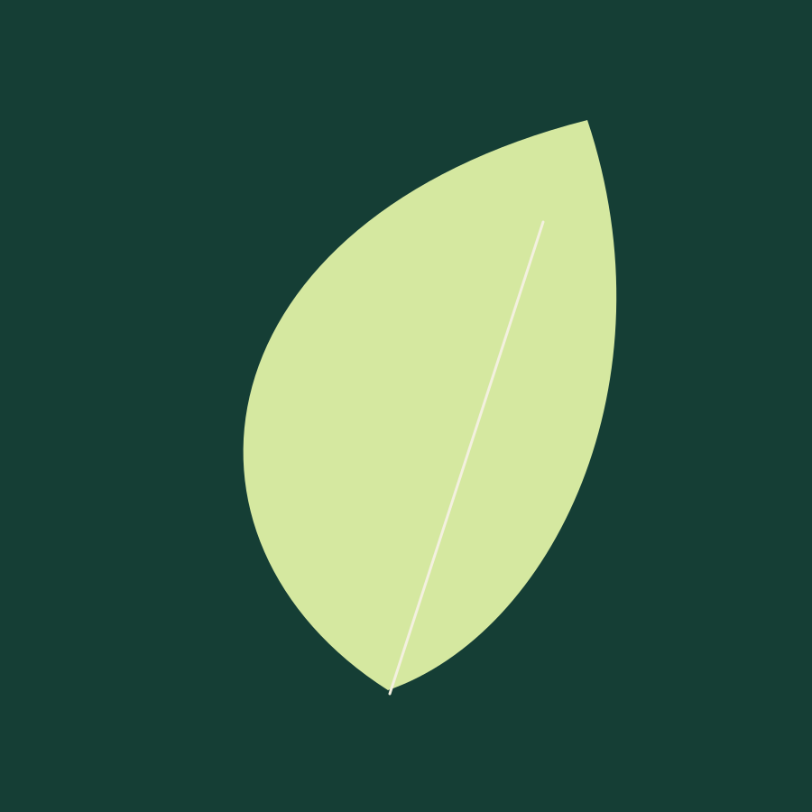
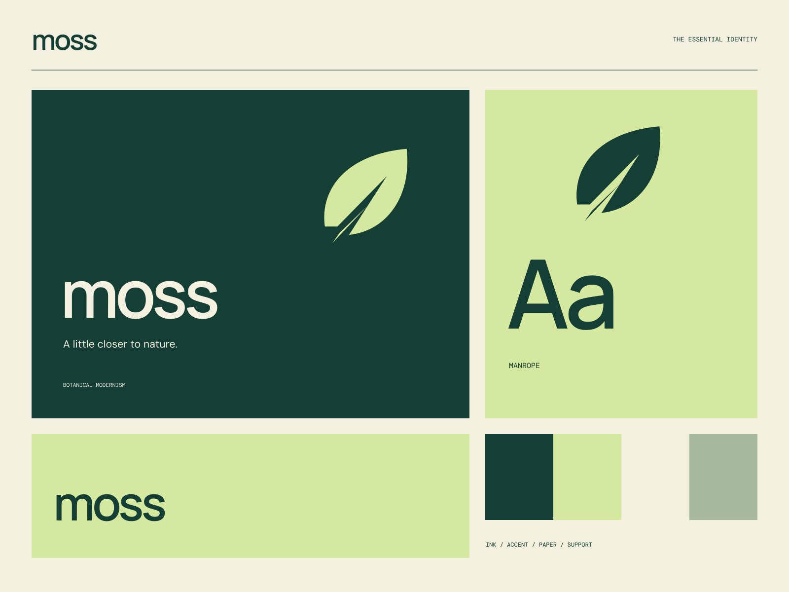

01
Rooted in something real
Plant-led formulas with a purposeful place in your daily ritual.
BOTANICAL CARE / CONSIDERED DAILY
A little closer to nature. Made slowly. Used daily.

A coherent little world
Made slowly. Used daily. A little closer to nature.
01
Plant-led formulas with a purposeful place in your daily ritual.
02
A smaller collection. A clearer intention. Every ingredient belongs.
03
Good care is a practice, not a promise of perfection.

The point of view
Sculptural herbarium silhouettes, apothecary labels, and expansive forest-green fields. The warmth comes from material, not decorative clutter.